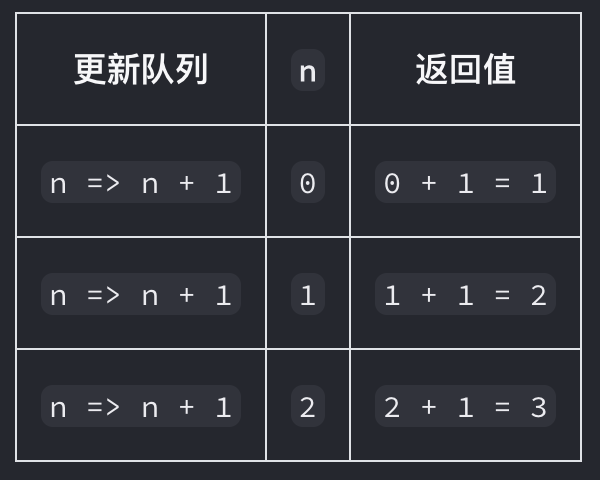

# hook
| 名称 | 描述 | 用途 | 备注 |
|---|---|---|---|
| useState | 允许你向组件添加一个 状态变量 参数 initialState ：你希望 state 初始化的值。它可以是任何类型的值，但对于函数有特殊的行为。在初始渲染后，此参数将被忽略。 |
1. 为组件添加状态 2. 根据先前的 state 更新 state 3. 更新状态中的对象和数组 4. 避免重复创建初始状态 5. 使用 key 重置状态 6. 存储前一次渲染的信息 |
|
| useEffect | 允许你将组件与外部系统同步 (state 是只读的。即使是对象或数组也不要尝试修改它，如果需要这样做，可以使用 Immer 第三方库) |
1. 连接到外部系统 2. 在自定义 Hook 中封装 Effect 3. 控制非 React 小部件 4. 使用 Effect 请求数据 5. 指定响应式依赖项 6. 在 Effect 中根据先前 state 更新 state（使用更新函数） 7. 删除不必要的对象 / 函数依赖项 8. 在服务器和客户端上显示不同的内容（Effect 不在服务器上运行） |
|
| useReducer | 它允许你向组件里面添加一个 reducer | 1. 向组件添加 reducer 2. 实现 reducer 函数 3. 避免重新创建初始值 |
useState 和 useReducer 对比 + 代码体积：通常来说使用后者编写的代码会较多（reducer 函数和需要调度的 actions）；但当多个事件有相似逻辑时，使用 uesReducer 可以减少代码量 + 可读性：后者允许你将状态更新逻辑与事件处理程序分离开来，在逻辑复杂的情况可以提升可读性 + 可调试性：useReducer 的可调试性更好 + 可测试性：reducer 是一个不依赖于组件的纯函数。这就意味着你可以单独对它进行测试 |
| useCallback | 允许你在多次渲染中缓存函数 | 1. 跳过组件的重新渲染 2. 从记忆化回调中更新 state 3. 防止频繁触发 Effect 4. 优化自定义 Hook |
经常和 memo 一起使用 |
| useMemo | 在每次重新渲染的时候能够缓存计算的结果 | 1. 跳过代价昂贵的重新计算 2. 跳过组件的重新渲染 3. 记忆另一个 Hook 的依赖 4. 记忆一个函数 |
1. 和 memo 区分开，memo 用于对组件的记忆，而 useMemo 则一般用于对计算结果的记忆 2. 使用 ref 可以确保： + 可以在重新渲染之间 存储信息（普通对象存储的值每次渲染都会重置）。 + 改变它 不会触发重新渲染（状态变量会触发重新渲染）。 + 对于组件的每个副本而言，这些信息都是本地的（外部变量则是共享的）。 3. 一般和 memo 一起使用 |
| useRef | 它能帮助引用一个不需要渲染的值 | 1. 使用用 ref 引用一个值 2. 通过 ref 操作 DOM 3. 避免重复创建 ref 的内容（ useRef(null) ） |
1. 改变 ref 不会触发重新渲染。这意味着 ref 是存储一些不影响组件视图输出信息的完美选择 2. 如在组件内部使用： const ref = useRef(null) ，则 ref 指向该组件 |
| useSyncExternalStore | 一个让你订阅外部 store 的 React Hook | 1. 订阅外部 store 2. 订阅浏览器 API 3. 把逻辑抽取到自定义 Hook 4. 添加服务端渲染支持 |
1. 第一个参数 subscribe 里面的 callback 参数，是于告知 hook 更新状态的通信函数，在需要状态改变的时候调用就行，如：xxx.addEventListener ('click', callback) |
# 其他函数
| 名称 | 描述 | 用途 | 备注 |
|---|---|---|---|
| memo | 允许你的组件在 props 没有改变的情况下跳过重新渲染 返回一个新的 React 组件。它的行为与提供给 memo 的组件相同，只是当它的父组件重新渲染时 React 不会总是重新渲染它，除非它的 props 发生了变化 |
1. 当 props 没有改变时跳过重新渲染 2. 使用 state 更新记忆化（memoized）组件 3. 使用 context 更新记忆化（memoized）组件 4. 最小化 props 的变化 |
1. 和 useMemo 区分开，memo 用于对组件的记忆，而 useMemo 则一般用于对计算结果的记忆 2. 一般和 useMemo、useCallback 一起使用 |
| forwardRef | 允许组件使用 ref 将 DOM 节点暴露给父组件 | 1. 将 DOM 节点暴露给父组件 2. 在多个组件中转发 ref |
|
| reducer | 对于拥有许多状态更新逻辑的组件来说，过于分散的事件处理程序可能会令人不知所措。对于这种情况，你可以将组件的所有状态更新逻辑整合到一个外部函数中，这个函数叫作 reducer。 | 第 1 步：将设置状态的逻辑修改成 dispatch 的一个 action 第 2 步：编写一个 reducer 函数 第 3 步：在组件中使用 reducer |
reducer 函数是放置逻辑的地方。它接受当前 state 和 action 对象，并返回更新后的 state |
| flushSync | 允许你强制 React 在提供的回调函数内同步刷新任何更新，这将确保 DOM 立即更新 | 使用 flushSync 是不常见的行为，并且可能损伤应用程序的性能。 |
# 其他概念
| 名称 | 描述 | 举例 | 备注 |
|---|---|---|---|
| state | state 如同一张快照： 也许 state 变量看起来和一般的可读写的 JavaScript 变量类似。但 state 在其表现出的特性上更像是一张快照。设置它不会更改你已有的 state 变量，但会触发重新渲染。 批处理 |
假设有如下文件：javascript import { useState } from 'react'; export default function Counter() { const [number, setNumber] = useState(0); return ( <> <h1>{number}</h1> <button onClick={() => { setNumber(number + 1); setNumber(number + 1); setNumber(number + 1); }}>+3</button> </> ) } 当点击按钮时，number 只会加 1，React 中的处理逻辑是： 1. setNumber(number + 1) ： number 是 0 所以 setNumber(0 + 1) 。- React 准备在下一次渲染时将 number 更改为 1 。2. setNumber(number + 1) ： number 是 0 所以 setNumber(0 + 1) 。- React 准备在下一次渲染时将 number 更改为 1 。3. setNumber(number + 1) ： number 是 0 所以 setNumber(0 + 1) 。- React 准备在下一次渲染时将 number 更改为 1 。 |
React 会使 state 的值始终” 固定 “在一次渲染的各个事件处理函数内部。 你无需担心代码运行时 state 是否发生了变化。 如果需要在重新渲染之前读取最新的 state，应该使用状态更新函数。 React 会等到事件处理函数中的 所有 代码都运行完毕再处理你的 state 更新。 这就是为什么重新渲染只会发生在所有这些 setNumber () 调用 之后 的原因。 |
| 在下次渲染前多次更新同一个 state，可以使用状态更新函数 | 假设有如下文件：javascript import { useState } from 'react'; export default function Counter() { const [number, setNumber] = useState(0); return ( <> <h1>{number}</h1> <button onClick={() => { setNumber(n => n + 1); setNumber(n => n + 1); setNumber(n => n + 1); }}>+3</button> </> ) } 这个 onClick 与之前函数不同的地方在于：使用 setNumber(n => n + 1) 替代 setNumber(number + 1) 。这是一种告诉 React “用 state 值做某事” 而不是仅仅替换它的方法。在这里， n => n + 1 被称为更新函数。当你将它传递给一个 state 设置函数时：1. React 会将此函数加入队列，以便在事件处理函数中的所有其他代码运行后进行处理。 2. 在下一次渲染期间，React 会遍历队列并给你更新之后的最终 state。 javascript setNumber(n => n + 1); setNumber(n => n + 1); setNumber(n => n + 1); 下面是 React 在执行事件处理函数时处理这几行代码的过程： 1. setNumber (n => n + 1)：n => n + 1 是一个函数。React 将它加入队列。 2. setNumber (n => n + 1)：n => n + 1 是一个函数。React 将它加入队列。 3. setNumber (n => n + 1)：n => n + 1 是一个函数。React 将它加入队列。 当你在下次渲染期间调用 useState 时，React 会遍历队列。之前的 number state 的值是 0 ，所以这就是 React 作为参数 n 传递给第一个更新函数的值。然后 React 会获取你上一个更新函数的返回值，并将其作为 n 传递给下一个更新函数，以此类推：React 会保存 3 为最终结果并从 useState 中返回。 |
||
| 响应式值 | 响应式值包括 props 和直接在组件内声明的所有变量和函数 |